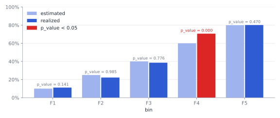

Model validation#
A bank that sets its capital requirements with internal ratings validates each model at least once a year and reports the results to its supervisor. For the PD, LGD and CCF models of the IRB approach, the European Central Bank prescribes the quantitative tools of that report in its “Instructions for reporting the validation results of internal models” of February 2019: back-tests of the estimates, the discriminatory power against that of the initial validation, and the stability of the ratings. This guide maps each tool to a kivi function and computes them on simulated data, in the order of the report.
A validation reviews once a year a model that Model monitoring follows period by period, and Regulatory capital, the next guide, turns the validated PDs into the capital that they require, before Vintage and roll-rate analysis follows the loans that the model approves. The tools belong to several steps of a model: Calibration back-tests the estimates, Model performance measures the ranking and Vintage and roll-rate analysis follows the migrations between grades, and those guides explain each function in detail. jeffreys_test(), roc_auc_interval(), migration_bandwidth(), migration_test(), concentration_test(), backtest_table() and generalized_auc() compute the statistics of the report, default_rate_table() counts the customers and the defaults of each grade from a monthly panel, and spiegelhalter_test() and brier_decomposition() add two checks that it does not ask for.
The tools of the report#
Section |
Tool |
kivi |
|---|---|---|
2.5.3.1 |
Back-testing of the PD of each grade and of the portfolio with the Jeffreys test |
|
2.5.4.1, annex 3.1 |
Current AUC against the AUC of the initial validation |
The estimate and the standard error of |
2.5.5.1 |
Customer migrations: the upper and lower MWB |
|
2.5.5.2 |
Stability of the migration matrix: a z test for each off-diagonal cell |
|
2.5.5.3 |
Concentration in rating grades: the HI and a test of the coefficient of variation |
|
2.6.2.1, 2.8.2.1, 2.9.3.1, 2.9.3.2 |
Back-testing of the LGD, the LGD in-default, the CCF and the EAD of facilities with an EAD approach with a one-sided t-test |
|
2.7.2.1 |
Back-testing of the ELBE with a two-sided t-test |
|
2.6.3.1, 2.9.4.1, annex 3.2 |
Current gAUC of the LGD or the CCF against the gAUC of the initial validation |
The estimate and the standard error of |
none |
Calibration of the probabilities of single customers |
|
none |
Reliability and resolution of the Brier score |
The report also asks for counts that need no statistics, such as those of the customers with missing or overridden ratings, and for qualitative assessments. kivi leaves these, and the reporting templates, to the bank.
PD models#
The examples use the PDs of the incumbent scorecard of make_applications(), described in Example data, on the approved applicants of two samples: one stands for the initial validation of the model and the other for the current observation period.
>>> import math
>>> import numpy as np
>>> import pandas as pd
>>> from kivi.datasets import make_applications
>>> initial = make_applications(n_applicants=5000, rng=0).query("approved")
>>> current = make_applications(n_applicants=5000, rng=1).query("approved")
Back-testing the grades#
The PDs are mapped to the grades of a master scale, and jeffreys_test() tests the PD of each grade against its defaults. The test is one-sided: a small p-value means that the grade has more defaults than its PD predicts. Calibration describes the scale and the test.
>>> from kivi.calibration import assign_grades, calibration_table, jeffreys_test, master_scale
>>> scale = master_scale(np.geomspace(0.01, 0.16, 5), labels=list("ABCDE"))
>>> grades = assign_grades(current["incumbent_pd"], scale)
>>> table = calibration_table(grades, current["target"], current["incumbent_pd"])
>>> table = table.join(scale["probability"])
>>> table.assign(
... jeffreys=jeffreys_test(table["event"], table["total"], table["probability"])
... ).round(3)
total event event_rate mean_probability probability jeffreys
bin
A 5 0 0.000 0.012 0.01 0.255
B 138 1 0.007 0.023 0.02 0.865
C 809 37 0.046 0.045 0.04 0.200
D 1713 180 0.105 0.083 0.08 0.000
E 664 117 0.176 0.131 0.16 0.128
The report also tests the whole portfolio, at its mean PD. Count it as one group:
>>> portfolio = calibration_table(
... ["all"] * len(current), current["target"], current["incumbent_pd"]
... )
>>> jeffreys_test(portfolio["event"], portfolio["total"], portfolio["mean_probability"]).round(6)
bin
all 0.000022
dtype: float64
The incumbent PDs understate the default rate of the current period: grade D defaults at 10.5% against a PD of 8%, and the portfolio at 10.1% against a mean PD of 8.1%.
The report defines its counts at the beginning of the observation period: N holds the customers of a grade that are not in default then, D those of them that default at least once during the period, also after they move to another grade or model, and the PD is that of the grade at the beginning (section 2.3). Where the grades come from a monthly panel, default_rate_table() with the month before the observation period as its only start month gives N as total, D as event and, with probability, the PD of each grade at that month as mean_probability. Here the loans of the simulated loan book of Vintage and roll-rate analysis are pooled by their delinquency status, each pool with one PD, and the observation period is 2025, so the start month is December 2024:
>>> from kivi.datasets import make_loan_panel
>>> from kivi.vintage import default_rate_table
>>> panel = make_loan_panel(rng=0)
>>> pool_pd = pd.Series({"current": 0.04, "1-29": 0.25, "30-59": 0.5, "60-89": 0.8})
>>> counts = default_rate_table(
... panel["loan_id"],
... panel["month"],
... panel["status"],
... panel["status"] == "90+",
... starts=["2024-12"],
... probability=panel["status"].map(pool_pd).astype(float),
... )
>>> counts.assign(
... jeffreys=jeffreys_test(counts["event"], counts["total"], counts["mean_probability"])
... ).round(3)
total event exited event_rate mean_probability jeffreys
start grade
2024-12 current 2146 73 413 0.034 0.04 0.924
1-29 65 17 12 0.262 0.25 0.406
30-59 23 16 0 0.696 0.50 0.029
60-89 15 11 0 0.733 0.80 0.753
The loans already in default in December, the 90+ pool, belong to no grade, so their missing PD does not matter. The 30-59 pool defaults at 69.6% against a PD of 50%, which the test rejects at the 5% level; the other pools pass. The 413 loans of the current pool that left the book during 2025 without a default stay in N, as the report counts them.
Current AUC against the initial AUC#
The report compares the AUC of the current period with the AUC of the initial validation, which it takes as known, under the null hypothesis that the AUC has not fallen:
where \(s\) is the standard error of the current AUC, which roc_auc_interval() estimates by the method of annex 3.1. Two lines compute the test from the two AUCs:
>>> from kivi.metrics import roc_auc_interval
>>> initial_auc = roc_auc_interval(initial["incumbent_pd"], initial["target"]).loc["auc"]
>>> current_auc = roc_auc_interval(current["incumbent_pd"], current["target"]).loc["auc"]
>>> s = (initial_auc["estimate"] - current_auc["estimate"]) / current_auc["se"]
>>> print(f"S = {s:.2f}, p = {0.5 * math.erfc(s / math.sqrt(2)):.3f}")
S = -0.29, p = 0.616
The current AUC of 0.658 is a little higher than the initial AUC of 0.654, so the ranking has not deteriorated. Only the standard error of the current AUC enters the test, because the report treats the initial AUC as fixed.
Migrations and concentration#
The stability tools take the grade of each customer at the beginning and at the end of the observation period. migration_bandwidth() gives the upper and lower MWB of the migrations to worse and to better grades, and migration_test() the z test of every off-diagonal cell of the migration matrix. The customers who defaulted, moved to another rating system or ended their relationship with the bank take a status of their own, such as "default", and count only among the customers of their grade at the beginning, as the report defines the migration matrix:
>>> from kivi.vintage import migration_bandwidth
>>> before = ["A", "A", "A", "B", "B", "B", "C", "C"]
>>> after = ["A", "B", "C", "A", "B", "default", "B", "C"]
>>> migration_bandwidth(before, after, grades=["A", "B", "C"]).round(4)
statistic
upper 0.7500
lower 0.6667
dtype: float64

How migration_bandwidth weighs the moves. Each move to a worse grade, above the diagonal, adds its distance |i - j| to the numerator of the upper MWB and the furthest move from its grade, in either direction, to the denominator. The moves to better grades make up the lower MWB in the same way, and the customer who defaulted counts in neither.#
Vintage and roll-rate analysis explains both functions on a simulated portfolio of five grades.
concentration_test() gives the HI of the grades and tests whether their coefficient of variation has risen since the initial validation. Count every grade of the scale, empty or not, in both samples:
>>> from kivi.calibration import concentration_test
>>> initial_grades = assign_grades(initial["incumbent_pd"], scale)
>>> concentration_test(
... grades.value_counts(sort=False), initial_counts=initial_grades.value_counts(sort=False)
... ).round(4)
statistic
hi 0.3744
cv 0.9092
initial_hi 0.3825
initial_cv 0.9223
statistic -0.0250
p_value 0.5100
dtype: float64
The grades are as concentrated as at the initial validation.
The report asks for the HI of the numbers of customers with this test, and for the HI of their exposures alone, which concentration_test gives for the exposure of each grade without initial_counts.
LGD and CCF models#
The LGD tools work on the facilities whose recovery process closed in the observation period. Here 1,500 closed defaults in five facility grades realize LGDs that scatter widely around the LGD of their grade, as recoveries do. The LGDs of grade F4 are drawn around 68% instead of its LGD of 60%:
>>> rng = np.random.default_rng(0)
>>> grade_lgd = pd.Series([0.10, 0.25, 0.40, 0.60, 0.80], index=["F1", "F2", "F3", "F4", "F5"])
>>> facility_grade = pd.Series(pd.Categorical(
... rng.choice(grade_lgd.index, size=1500, p=[0.25, 0.3, 0.2, 0.15, 0.1]),
... categories=grade_lgd.index,
... ordered=True,
... ), name="grade")
>>> estimated = facility_grade.map(grade_lgd).astype(float)
>>> mean = estimated + np.where(facility_grade == "F4", 0.08, 0.0)
>>> realized = pd.Series(rng.beta(1.5 * mean, 1.5 * (1 - mean)), name="realized")
Back-testing the estimates#
backtest_table() gives, for each grade, the mean estimated and realized LGD, the variance of their difference and the t-test of the report, whose small p-values mean that the estimates are too low:
>>> from kivi.calibration import backtest_table
>>> backtest_table(facility_grade, realized, estimated).round(4)
total estimated realized difference variance statistic p_value
bin
F1 363 0.10 0.1114 0.0114 0.0409 1.0767 0.1412
F2 427 0.25 0.2223 -0.0277 0.0690 -2.1822 0.9852
F3 311 0.40 0.3863 -0.0137 0.1006 -0.7602 0.7762
F4 251 0.60 0.7064 0.1064 0.0793 5.9874 0.0000
F5 148 0.80 0.8016 0.0016 0.0662 0.0758 0.4698

The mean realized LGD of grade F4 exceeds its estimate of 60%, and only its p-value lies below 5%.#
Only grade F4 is rejected. The report tests the portfolio as well; pass one group for every facility:
>>> backtest_table(["all"] * len(realized), realized, estimated).round(4)
total estimated realized difference variance statistic p_value
bin
all 1500 0.3576 0.3676 0.01 0.0721 1.4422 0.0747
At the level of the portfolio, the shortfall of grade F4 is diluted by the other grades and is no longer significant at 5%. The same table back-tests the LGD in-default and the CCF, with their estimates and realized values in place of the LGDs, and the EAD estimates of facilities with an EAD approach, with the amount drawn at default as the realized value. The ELBE is tested two-sided, so its p-value is 2 * min(p_value, 1 - p_value).
Generalized AUC#
The discriminatory power of an LGD model is measured by the gAUC of generalized_auc() on a contingency table of estimated and realized segments. For a model with at most 20 facility grades, the rows are the grades, ordered by their LGD, and the realized LGDs fall into one class per grade: the first class holds the realized LGDs up to the smallest LGD of the grades, the next those up to the second smallest, and the last those above the largest. These classes are closed on the right, as pandas.cut makes them by default:
>>> realized_class = pd.cut(
... realized, [-np.inf, *grade_lgd, np.inf], labels=["R1", "R2", "R3", "R4", "R5", "R6"]
... )
>>> pd.crosstab(facility_grade, realized_class)
realized R1 R2 R3 R4 R5 R6
grade
F1 266 35 25 17 13 7
F2 200 90 42 44 27 24
F3 77 64 41 38 38 53
F4 10 16 18 30 52 125
F5 2 7 10 9 23 97
The estimated segments come first and the realized ones second:
>>> from kivi.metrics import generalized_auc
>>> gauc = generalized_auc(facility_grade, realized_class)
>>> gauc.round(4)
estimate se lower upper
statistic
gauc 0.77 0.0072 0.7559 0.7841
somers_d 0.54 0.0144 0.5117 0.5683
Like the AUC, the current gAUC is compared with the gAUC of the initial validation, taken as known. With an initial gAUC of 0.78:
>>> s = (0.78 - gauc.loc["gauc", "estimate"]) / gauc.loc["gauc", "se"]
>>> print(f"S = {s:.2f}, p = {0.5 * math.erfc(s / math.sqrt(2)):.3f}")
S = 1.39, p = 0.083
The gAUC has fallen by one point, which is not significant at 5%. Half of the facilities of grade F4 realize LGDs above 80%, the LGD of grade F5, so the shortfall of F4 also blurs the ranking of the two grades.
Continuous models#
A model with more than 20 facility grades or pools, or with a continuous LGD, is tested in the twelve LGD segments of the report: from 0% to 5%, from 5% to 10%, then in steps of 10% up to 100%, and 100% or more. Each segment includes its lower bound, so cut with right=False:
>>> segments = [0, 0.05, 0.1, 0.2, 0.3, 0.4, 0.5, 0.6, 0.7, 0.8, 0.9, 1, np.inf]
>>> model_lgd = pd.Series(rng.beta(1.2, 2.0, size=1500))
>>> outcome = pd.Series(rng.beta(1.5 * model_lgd, 1.5 * (1 - model_lgd)))
>>> estimated_segment = pd.cut(model_lgd, segments, right=False)
>>> backtest = backtest_table(estimated_segment, outcome, model_lgd)
>>> backtest[["total", "estimated", "realized", "statistic", "p_value"]].round(3)
total estimated realized statistic p_value
bin
[0.0, 0.05) 84 0.028 0.029 0.020 0.492
[0.05, 0.1) 98 0.075 0.079 0.241 0.405
[0.1, 0.2) 263 0.150 0.137 -1.037 0.850
[0.2, 0.3) 212 0.249 0.259 0.524 0.300
[0.3, 0.4) 215 0.345 0.351 0.272 0.393
[0.4, 0.5) 186 0.448 0.424 -1.119 0.868
[0.5, 0.6) 166 0.550 0.593 1.817 0.036
[0.6, 0.7) 125 0.648 0.643 -0.186 0.574
[0.7, 0.8) 85 0.746 0.740 -0.190 0.575
[0.8, 0.9) 44 0.842 0.816 -0.720 0.762
[0.9, 1.0) 22 0.922 0.930 0.208 0.419
The model is calibrated by construction, and still one segment of eleven has a p-value below 5%, as chance allows. No estimate reaches 100%, so the last segment is empty and left out.
The realized LGDs are cut into the same segments for the gAUC. A realized LGD below 0, from recoveries that exceed the exposure, falls outside the first segment and would be missing, so clip the realized values at 0 before cutting them:
>>> realized_segment = pd.cut(outcome.clip(lower=0), segments, right=False)
>>> generalized_auc(estimated_segment, realized_segment).round(4)
estimate se lower upper
statistic
gauc 0.7614 0.0067 0.7482 0.7745
somers_d 0.5228 0.0134 0.4964 0.5491
Beyond the report#
The report tests the PD of each grade on its own. spiegelhalter_test() tests the PDs of all customers at once, without grouping them. Every incumbent PD lies below 1/2, so a positive statistic means more defaults than the PDs predict, and its value of 4.09 confirms that they understate the risk of the current period:
>>> from kivi.calibration import brier_decomposition, spiegelhalter_test
>>> statistic, pvalue = spiegelhalter_test(current["incumbent_pd"], current["target"])
>>> print(f"z = {statistic:.2f}, p = {pvalue:.1e}")
z = 4.09, p = 4.3e-05
brier_decomposition() splits the Brier score of the PDs by grade into the reliability, which the understated PDs raise, the resolution, which measures how far the default rates of the grades differ, and the uncertainty of the outcomes:
>>> brier_decomposition(grades, current["target"], current["incumbent_pd"]).round(4)
statistic
brier 0.0887
reliability 0.0007
resolution 0.0023
uncertainty 0.0905
within_variance 0.0002
within_covariance 0.0004
dtype: float64
Sample weights#
The report counts customers and facilities, so run its tests without weights. The functions take weights as frequency weights, for data aggregated into counts: integer weights give the same result as repeating rows, and the tests count the total weight as the number of observations. Weights that correct for sampling, such as inverse sampling rates, therefore make the standard errors too small and the p-values too low. concentration_test() takes the counts or the exposures of the grades instead.
Limits#
Every test assumes independent observations. Defaults and recoveries that move together, as in a downturn, make the back-tests reject more often than their nominal level.
The concentration test compares the coefficients of variation of \(K\) grades, and its variance depends on \(K\) rather than on the number of customers, so a scale with few grades leaves it little power. Read the HI and its change as well as the p-value.
The migration test gives one p-value for each of the \(K (K - 1)\) off-diagonal cells, so some fall below 5% by chance alone.
For a portfolio with few defaults, annex 3.1 pools the observation periods after replacing each rating by the share of the period’s customers rated the same or worse, for ratings that are higher for better customers. For a PD, which rises with the risk, these are the customers with the same or a higher PD,
score.groupby(period).rank(method="max", ascending=False, pct=True). That share falls as the risk rises, so pass its negative,-score.groupby(period).rank(method="max", ascending=False, pct=True), toroc_auc_interval(), which takes the pooled values. With tied grades, the share rated the same or better,rank(method="max", pct=True)withoutascending=False, gives another AUC.kivi computes the statistics of the report, not its data exclusions, its counts of overrides and missing ratings, or its templates.